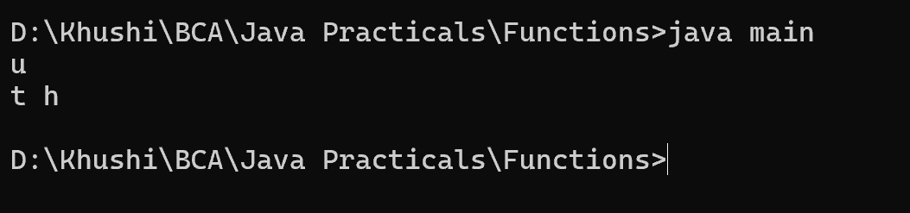

3. Write a Java method to display the middle character of a string. Note: 1. If the length of the string is odd there will be two middle characters. 2. If the length of the string is even there will be one middle character.
class a{
void midchar(String s){
int size=s.length();
if(size%2==0){
int x=size/2;
int y=x-1;
System.out.println(s.charAt(y)+" "+s.charAt(x));
}
else{
System.out.println(s.charAt(size/2));
}
}
}
class main{
public static void main(String st[]){
a obj=new a();
obj.midchar("cruel");
obj.midchar("fathom");
}
}
